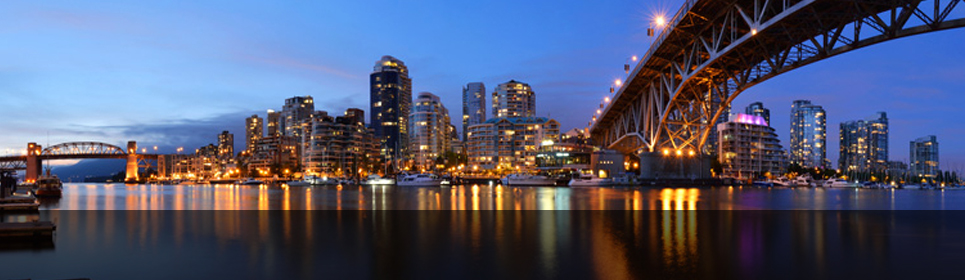
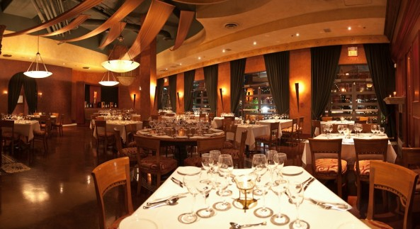

- 

-
Vancouver - Toca do Felix.
-
Vancouver - Ponte, visão a Noite.
-
Linda vista de Vancouver.
Blue Water Café
O Blue Water Café oferece uma excelente seleção de ostras. Você também poderá escolher nos tanques de crustáceos vivos deliciosos camarões e lagostas. Este restaurante em Vancouver é visitado por muitas celebridades e é um excelente lugar para uma noite romântica. Não deixe de experimentar o cheesecake de mascarpone, que é considerado o melhor da cidade.
Lupo
Localizado na 869 Hamilton Street, no centro de Vancouver, o Restaurante e Vinoteca Lupo é um local elegante, romântico e permanece como uma joia escondida no centro da cidade. Os destaques ficam para o gnocchi di ricotta e o fettuccine à bolonhesa. O restaurante também tem uma sala privativa com uma excelente adega de vinhos para uma noite romântica.
Chambar Belgian Grill
Este restaurante tem uma ótima seleção de pratos da cozinha belga. A iluminação é intimista e romântica, e está perto de tudo, como o GM Place, o Queen Elizabeth Theatre e o BC Place. Este restaurante belga está localizado na Beatty Street e também tem uma excelente seleção de coquetéis e cervejas belgas.
La Terrazza

Situado no bairro histórico de Yaletown, o La Terrazza tem uma extensa lista de vinhos, com mais de 1.600 rótulos, bem como pratos com frutos do mar frescos e saborosas massas. Experimente o penne arrabbiata ou o atum de barbatana amarela, conhecido como tonno alla griglia. As mesas são espaçosas e dispostas de uma forma onde você pode desfrutar de um jantar íntimo.